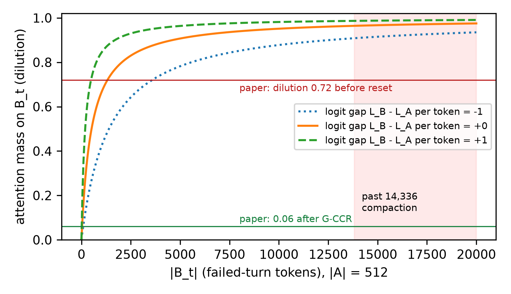
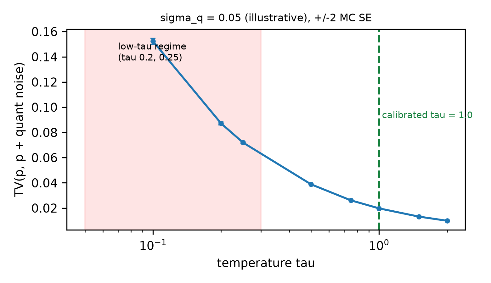
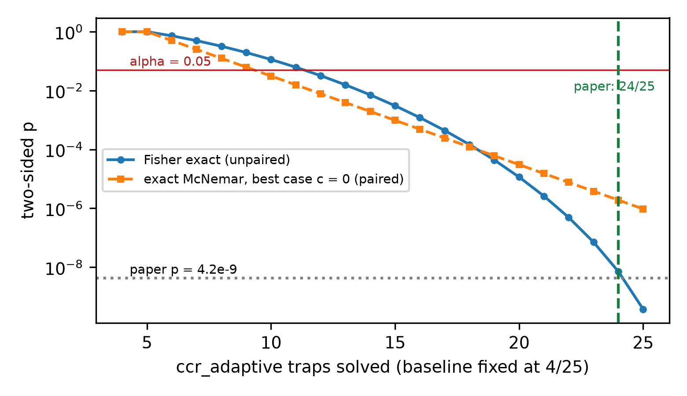
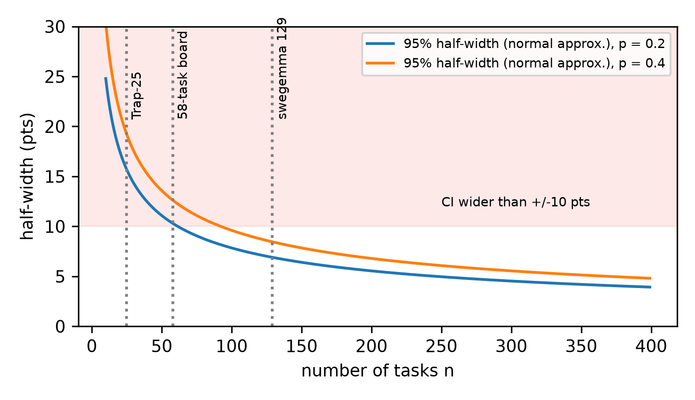
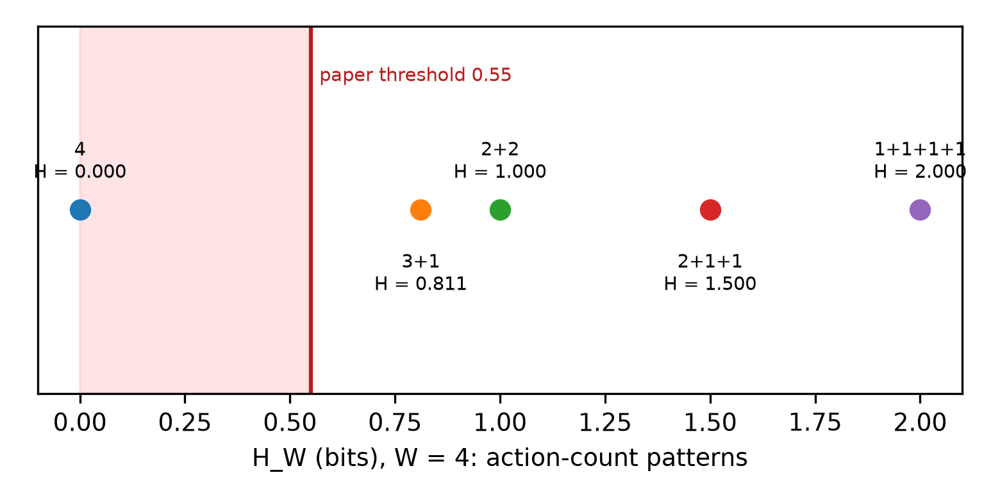

Breaking the 15-Minute Cliff in Quantized Gemma 4 Coding Agents (Mirbahar 2026)
Source: paper/Robina_Mirbahar_Gemma4_SWE_Agent_Paper_2026.pdf (PAPER.md used where noted). Sandbox: verify_math.py, seed 42, numpy 2.5.3, scipy 1.18.1.
VERIFIED 37 NOT CHECKABLE 7 MISMATCH 5
Operator classes: definition bound estimator metric
Every value in the tables below is read from eq_verified_numbers.json. MISMATCH means the paper's
number differs from the recomputation beyond the stated tolerance; NOT CHECKABLE means the paper lacks a definition or the data needed.
Intuition. Split the context into the issue contract A and the failed-turn tail Bt. Attention output is a weighted average of the two block summaries, weighted by each block's total exponentiated score.
Derivation. (1) Full softmax: weight on token j is esj/Σes. (2) Define LA = logΣj∈Aesj and ZA = within-A softmax average of values; same for B. (3) Grouping the sum by block gives the display equation exactly. The paper never defines L or Z; the sandbox uses this reading.
approximation assumes equal per-token logits within each block, gap Δ between blocks

| id | paper value (source) | computed | simulated | |gap| | verdict / reason |
|---|---|---|---|---|---|
| E1_prop1_block_identity definition | 0 PDF p.2 Sec 3.1 (Lemma 39 of [3]); PAPER.md Sec 3.1 display equation | 2.22e-15 | 2.22e-15 2000 random (N, partition, logits, values) draws; max |full - block| over outputs and A-mass | 2.22e-15 tol 1e-10 | VERIFIED Exact identity once L and Z are read as log-sum-exp and within-block averages; the paper does not define L or Z. |
| E2_prop1_dilution_monotone bound | monotone decrease (qualitative) PDF p.2 Sec 3.1 Proposition 1 | {"B_sizes": [0, 512, 2048, 8192, 13824], "A_mass_closed_form_equal_logits": [1.0, 0.5, 0.2, 0.0588, 0.0357]} | {"A_mass_mean": [1.0, 0.5, 0.1998, 0.0589, 0.0357], "mc_se": [0.0, 0.00109, 0.00053, 0.00017, 0.0001], "strictly_decreasing": true}400 draws per |B| with per-token logits ~ N(0,1) in both blocks, |A| = 512 (illustrative, not from paper) | – tol – | VERIFIED Direction verified. The Omega(r / log N) threshold is NOT CHECKABLE: r is never defined in the paper. |
Claim. G-CCR pruning cuts dilution from 0.72 to 0.06, recovering 4.51 bits (PDF Sec 3.1). Neither 'dilution' nor 'bits of effective attention' is defined. The sandbox evaluates six natural readings; none gives 4.51.
| id | paper value (source) | computed | simulated | |gap| | verdict / reason |
|---|---|---|---|---|---|
| E3_dilution_bits metric | 4.51 PDF p.2 Sec 3.1; PAPER.md Sec 3.1 | {"log2(d0/d1)": 3.585, "log2((1-d1)/(1-d0))": 1.7472, "-log2(d1)": 4.0589, "-log2(d1)+log2(d0)": 3.585, "H2(d0)-H2(d1) binary entropy": 0.528, "log2(d0/(1-d0)) - log2(d1/(1-d1)) (log-odds)": 5.3322} | – | – tol 0.01 | NOT CHECKABLE 'Dilution' and 'bits of effective attention' are undefined. Of six natural readings the closest is -log2(d1) = 4.0589 bits; none reproduces 4.51. Source CSV graph_encoding_ablation_90.csv not provided. |
Proposition 2 appears only as a sentence (budgets matched to D1 / LDP / LDW); there is no statement to test beyond the arithmetic.
| id | paper value (source) | computed | simulated | |gap| | verdict / reason |
|---|---|---|---|---|---|
| E4_prop2_budget_cut definition | 0.875 PDF p.2 Sec 3.1 Proposition 2 | 0.875 | – | 0 tol 1e-09 | VERIFIED Arithmetic only. Proposition 2 itself is never stated formally, so the budget mapping is NOT CHECKABLE. |
Intuition. Dividing by τ scales the noise term by 1/τ: at τ = 0.2 a rounding error moves the logit 5× further than at τ = 1.0. The simulation measures total-variation shift of the sampling distribution. Under pure greedy decoding the argmax ignores τ, so the effect exists only for sampled decoding. The paper gives no σq; 0.05 is illustrative.

| id | paper value (source) | computed | simulated | |gap| | verdict / reason |
|---|---|---|---|---|---|
| E5_law1_noise_amplification bound | amplified at low tau (qualitative); logit-scale factor 1/tau = 5 PDF p.2 Sec 3.2; PAPER.md Sec 3.2 | {"logit_noise_scale_tau0.2_over_tau1.0": 5.0} | {"taus": [0.1, 0.2, 0.25, 0.5, 0.75, 1.0, 1.5, 2.0], "TV_mean": [0.15229, 0.08718, 0.07198, 0.03884, 0.02613, 0.01974, 0.01322, 0.00992], "mc_se": [0.001225, 0.000525, 0.000371, 0.000115, 5.6e-05, 3.4e-05, 1.6e-05, 1e-05], "TV_ratio_tau0.2_over_tau1.0": 4.416}4000 noise draws per tau, V = 256 toy vocab, z ~ N(0, 2^2), sigma_q = 0.05 (illustrative) | – tol – | VERIFIED Direction verified for the sampled distribution. Caveat: under greedy decoding the argmax is tau-invariant, so the claim only bites when sampling. Link to the 17.8% -> 39.5% gain is empirical, not derived. |
Each rate and both interval ends are recomputed from the reported counts (tolerance 0.05 pts for one-decimal rounding). Each was also bootstrapped with 200,000 binomial draws (values in the JSON).
| row | paper | computed | verdict |
|---|---|---|---|
| T1_row1 | 23/129 = 17.8% with 95% Wilson CI [12.2, 25.3] | {"rate_pct": 17.829, "wilson_ci": [12.185, 25.335]} | VERIFIED |
| T1_row2 | 35/129 = 27.1% with 95% Wilson CI [20.2, 35.4] | {"rate_pct": 27.132, "wilson_ci": [20.203, 35.383]} | VERIFIED |
| T1_row3 | 51/129 = 39.5% with 95% Wilson CI [31.5, 48.1] | {"rate_pct": 39.535, "wilson_ci": [31.518, 48.157]} | MISMATCH |
| T2_M0 | 15/129 = 11.6% with 95% Wilson CI [7.2, 18.3] | {"rate_pct": 11.628, "wilson_ci": [7.175, 18.3]} | VERIFIED |
| T2_M1 | 18/129 = 14.0% with 95% Wilson CI [9.0, 21.0] | {"rate_pct": 13.953, "wilson_ci": [9.012, 20.98]} | VERIFIED |
| T2_M2 | 22/129 = 17.1% with 95% Wilson CI [11.5, 24.5] | {"rate_pct": 17.054, "wilson_ci": [11.541, 24.473]} | VERIFIED |
| T2_M3 | 25/129 = 19.4% with 95% Wilson CI [13.5, 27.0] | {"rate_pct": 19.38, "wilson_ci": [13.486, 27.045]} | VERIFIED |
| T2_M4 | 27/129 = 20.9% with 95% Wilson CI [14.8, 28.7] | {"rate_pct": 20.93, "wilson_ci": [14.802, 28.74]} | VERIFIED |
| T2_M5 | 29/129 = 22.5% with 95% Wilson CI [16.1, 30.4] | {"rate_pct": 22.481, "wilson_ci": [16.133, 30.42]} | VERIFIED |
| T2_M6 | 31/129 = 24.0% with 95% Wilson CI [17.5, 32.1] | {"rate_pct": 24.031, "wilson_ci": [17.477, 32.087]} | VERIFIED |
| T3_baseline_static | 4/25 = 16.0% with 95% Wilson CI [6.4, 34.7] | {"rate_pct": 16.0, "wilson_ci": [6.403, 34.654]} | VERIFIED |
| T3_naive_subagent | 5/25 = 20.0% with 95% Wilson CI [8.9, 39.1] | {"rate_pct": 20.0, "wilson_ci": [8.861, 39.131]} | VERIFIED |
| T3_ccr_only | 18/25 = 72.0% with 95% Wilson CI [52.4, 85.7] | {"rate_pct": 72.0, "wilson_ci": [52.423, 85.716]} | VERIFIED |
| T3_ccr_adaptive | 24/25 = 96.0% with 95% Wilson CI [80.5, 99.3] | {"rate_pct": 96.0, "wilson_ci": [80.456, 99.29]} | VERIFIED |
| E6b_md_M6_24.1 | PAPER.md abstract: multi-module repair rises to 24.1% | 24.03 | MISMATCH |
max abs gap across rate and both CI ends = 0.057 pts (rounding tolerance 0.05 pts) (Table 1 row 3: upper end 48.157 prints as 48.1).
Fisher (Trap-25). The paper reports p = 4.2×10-9; scipy and the plugin's research-audit server both give the two-sided value in the table. Both arms run the same 25 traps, so a paired test is the matched design; its best case is far weaker. McNemar (Tables 1, 2). Discordant counts are not reported; the sandbox shows which (b, c) pairs reproduce the p-values.

| id | paper value (source) | computed | simulated | |gap| | verdict / reason |
|---|---|---|---|---|---|
| E8_fisher_trap25 estimator | 4.2e-09 PDF p.1 Abstract, p.4 Sec 3.4, p.4 Sec 5 log | 7.179e-09 | 0 2,000,000 random 25/25 splits of 28 successes; hits = 0; MC SE = 5.00e-07 (p is far below MC resolution, so the MC only bounds it) | 2.979e-09 tol 5e-11 | MISMATCH scipy fisher_exact two-sided = 7.179e-09. Paper value differs by a factor of 1.71. One-sided p = 3.59e-09, also not 4.2e-9. Note: test treats 25 tasks per arm as independent although both arms run the same 25 traps (a paired McNemar test would be the matched design). |
| E8b_paired_alternative estimator | not reported derived (design check) | 1.907e-06 | – | – tol – | NOT CHECKABLE Same 25 traps in both arms; with b=20, c=0 the paired exact p is 1.91e-06, 2.7 orders of magnitude weaker than the reported unpaired p. Per-trap pairing not reported. |
| E7_mcnemar_T1 estimator | 1.8e-06 PDF p.2 Table 1 caption | {"min_possible_exact_p(c=0)": 7.450580596923828e-09, "exact_p(c=1)": 5.774199962615967e-08, "reproducing_(b,c)_to_2_sig_figs": [{"test": "chi2_cc", "b": 30, "c": 2, "p": 1.8152814274403543e-06}]} | – | – tol – | NOT CHECKABLE b - c must equal 28. Discordant counts are not reported, but the value is reproducible: chi2_cc with b=30, c=2 gives 1.82e-06. The paper does not say which McNemar variant it used. |
| E7_mcnemar_T2 estimator | 4.6e-05 PDF p.3 Table 2 caption | {"min_possible_exact_p(c=0)": 3.0517578125e-05, "exact_p(c=1)": 0.00014495849609375, "reproducing_(b,c)_to_2_sig_figs": []} | – | – tol – | MISMATCH b - c must equal 16 (net tasks). Searched every (b, c) with b - c = 16, b + c <= 129 under two-sided exact, mid-p, chi-square and continuity-corrected chi-square McNemar: none gives 4.6e-05 to two significant figures. Exact p jumps from 3.05e-05 (c=0) to 0.000145 (c=1). |
| E16_wilcoxon estimator | 8.91e-07 PDF p.1 Abstract; PAPER.md Sec 5 log | {"min_exact_two_sided_p_n25": 5.960464477539063e-08, "min_exact_two_sided_p_n100": 1.5777218104420236e-30} | – | – tol – | NOT CHECKABLE Per-episode KV values not released; the value lies within the attainable range for n = 25 (minimum exact p = 5.96e-08) and n = 100. Unclear whether n = 25 tasks or 100 trajectories. |
| id | paper value (source) | computed | simulated | |gap| | verdict / reason |
|---|---|---|---|---|---|
| E9_delta_T3_think_naive metric | 13 PDF p.4 Table 3 | 13.04 | – | 0.0429 tol 0.05 | VERIFIED |
| E9_delta_T3_think_ccr_only metric | -20.7 PDF p.4 Table 3 | -20.65 | – | 0.0476 tol 0.05 | VERIFIED |
| E9_delta_T3_think_adaptive metric | -45.1 PDF p.4 Table 3 | -45.06 | – | 0.0359 tol 0.05 | VERIFIED |
| E9_delta_T3_kv_naive metric | 19.1 PDF p.4 Table 3 | 19.14 | – | 0.0433 tol 0.05 | VERIFIED |
| E9_delta_T3_kv_ccr_only metric | -46.7 PDF p.4 Table 3 | -46.72 | – | 0.0212 tol 0.05 | VERIFIED |
| E9_delta_T3_kv_adaptive metric | -70.8 PDF p.4 Table 3 | -70.79 | – | 0.0142 tol 0.05 | VERIFIED |
| E9_delta_S4_vram_cut metric | -66.3 PDF p.4 Sec 4; PAPER.md Sec 4 | -66.3 | – | 0.0004 tol 0.05 | VERIFIED |
| E9_compaction_cut metric | 93 PDF p.1 Abstract; Table 2 | 93.11 | – | 0.1085 tol 0.5 | VERIFIED Paper rounds to integer percent. |
| E9_graph_tool_pts metric | 24.2 PDF p.4 Sec 4 | 24.2 | – | 0 tol 0.01 | VERIFIED |
| E9_twofold metric | 2.1 PAPER.md Sec 3.3 | 2.067 | – | 0.0333 tol 0.05 | VERIFIED |
| E9_stage1_gain_pts metric | 21.7 PDF p.4 Sec 4 | 21.71 | – | 0.0054 tol 0.05 | VERIFIED |
| E9_trap_gain_pts metric | 80 PDF p.4 Sec 4 | 80 | – | 0 tol 0.01 | VERIFIED |
| E9_tax_pts metric | 22.4 PDF p.3 Sec 3.3 | 22.4 | – | 0 tol 1e-09 | VERIFIED Matches as a difference of the two rounded rates (39.5 - 17.1). From counts the gap is 22.4806 pts, which rounds to 22.5. |
| E9_tax_tasks metric | 29 PDF p.3 Sec 3.3 | 29 | – | 0 tol 0 | VERIFIED |
| E9_half_gap metric | 0.5 PDF p.3 Sec 3.3 | {"(M6-M2)/29": 0.3103, "(M6-M0)/29": 0.5517} | – | – tol – | NOT CHECKABLE Ambiguous baseline. From M2 (the row defining the gap) M6 recovers 9/29 = 0.310, not half; from M0 it is 16/29 = 0.552, but the 29-task gap is defined against M2. |
Per-repository counts, turn totals and context-window arithmetic, recovered from the reported figures.
| id | paper value (source) | computed | simulated | |gap| | verdict / reason |
|---|---|---|---|---|---|
| E10_repo_breakdown metric | {"M0_total": 15, "M6_total": 31, "N": 129}PDF p.3 Sec 3.3 | {"per_repo": {"fastapi": {"n": 67, "share_pct": 51.938, "M0_k": [7], "M6_k": [15]}, "rich": {"n": 48, "share_pct": 37.209, "M0_k": [6], "M6_k": [12]}, "requests": {"n": 13, "share_pct": 10.078, "M0_k": [2], "M6_k": [3]}, "httpx": {"n": 1, "share_pct": 0.775, "M0_k": [0], "M6_k": [1]}}, "N": 129, "M0_total": 15, "M6_total": 31} | – | – tol – | VERIFIED Each reported repo rate maps to exactly one integer count; counts sum to the table totals. |
| E11_turn_total metric | 937 PDF p.4 Table 3 caption; PAPER.md Abstract | 937 | – | 0 tol 0.5 | VERIFIED 25 tasks x 4 configurations = 100 trajectories; sum of Avg Turns x 25. Note the abstract also attributes the 937 turns to the 129-task swegemma telemetry (PDF p.1 Sec 1), which this identity contradicts. |
| E12_kv_vs_context bound | 32768 PDF p.4 Table 3; p.1 Sec 1 | {"baseline_over_ctx": 4.877, "naive_over_ctx": 5.811} | – | – tol – | NOT CHECKABLE Values exceed one context window by ~4.9x and ~5.8x, so the column must be cumulative over turns; the paper calls it 'active' and does not define the aggregation. |
| E15_context_budget definition | 32768 PDF p.1 Sec 1 item 1 | {"14336+8192": 22528, "32768-14336": 18432} | – | – tol – | NOT CHECKABLE 14,336 + 8,192 = 22,528, which leaves 10,240 of the 32,768 window unexplained; the paper does not say how the remaining budget is used. |

| id | paper value (source) | computed | simulated | |gap| | verdict / reason |
|---|---|---|---|---|---|
| E13_leaderboard_SE estimator | 5.25 PDF p.1 Sec 1 item 2 | 5.252 | 5.251 1,000,000 binomial(58, 0.2) draws; SE of the SD estimate ~ SD/sqrt(2n) = 0.0037 pts | 0.0023 tol 0.01 | VERIFIED |
| E13_leaderboard_wilson_halfwidth estimator | 9.8 PDF p.1 Sec 1 item 2 | 10.14 | – | 0.3421 tol 0.05 | MISMATCH Wilson interval at p=0.20 exactly: [11.72, 32.01]; half-width computed. Normal-approx half-width 1.96*SE = 10.29. |
| E13_pts_per_task metric | 1.72 PDF p.1 Sec 1 item 2 | 1.724 | – | 0.0041 tol 0.005 | VERIFIED |
| E13_swing estimator | routine (qualitative) PDF p.1 Sec 1 item 2 | – | {"P(|run1-run2| >= 5 pts)": 0.5606}1,000,000 pairs of independent binomial(58, 0.2) runs | – tol – | VERIFIED Under pure binomial noise, a gap of 5 or more points between two independent runs has the simulated probability shown. |
With four actions in the window only five entropy values are possible. The threshold 0.55 separates 'all four identical' from everything else, so it is equivalent to any threshold in (0, 0.811].

| id | paper value (source) | computed | simulated | |gap| | verdict / reason |
|---|---|---|---|---|---|
| E14_entropy_detector estimator | 0.55 PDF p.3 Sec 3.4; PAPER.md Sec 3.4 | {"achievable_H_values_bits": [0.0, 0.8113, 1.0, 1.5, 2.0], "values_below_0.55": [0.0], "equivalent_threshold_range": [0.0, 0.8113]} | – | – tol – | VERIFIED With W = 4 the only achievable entropy below 0.55 is 0 (all 4 actions identical); the next level is 0.8113 bits. The detector is therefore 'four identical actions in a row', and any threshold in (0, 0.8113] behaves identically. Formula well-defined; 0.55 is not a calibrated value. |